Contents
clear
close all
clc
PROBLEM 1.1
filename = '.\zeldaOriginal.png';
image = imread(filename);
image = rgb2gray(image);
org_image = image;
image = double(image);
diffusion_type = 'Charbonnier';
contrast_threshold = 30;
scale_parameter = 1/7;
diffusion_time = 300;
image = double(image);
Analysis of diffusion_type vs diffusion_time
images = zeros(512,512,diffusion_time);
metrics = zeros(diffusion_time, 4);
for iteration = 1 : diffusion_time
image = PM_diffusion(image, contrast_threshold, scale_parameter, diffusion_type);
images(:,:, iteration) = image;
[minu, maxu, meanu, varu] = analyse(image);
metrics(iteration, :) = [minu, maxu, meanu, varu];
end
figure, imshow(uint8(images(:,:,10)))
title(strcat('iteration',{' '}, '10'))
saveas(gcf, string(strcat('.\type_effect\','iteration',{'_'}, '10','.jpg')))
figure, imshow(uint8(images(:,:,20)))
title(strcat('iteration',{' '}, '20'))
saveas(gcf, string(strcat('.\type_effect\','iteration',{'_'}, '20','.jpg')))
figure, imshow(uint8(images(:,:,40)))
title(strcat('iteration',{' '}, '40'))
saveas(gcf, string(strcat('.\type_effect\','iteration',{'_'}, '40','.jpg')))
figure, imshow(uint8(images(:,:,80)))
title(strcat('iteration',{' '}, '80'))
saveas(gcf, string(strcat('.\type_effect\','iteration',{'_'}, '80','.jpg')))
figure, imshow(uint8(images(:,:,160)))
title(strcat('iteration',{' '}, '160'))
saveas(gcf, string(strcat('.\type_effect\','iteration',{'_'}, '160','.jpg')))
figure, imshow(uint8(images(:,:,300)))
title(strcat('iteration',{' '}, '300'))
saveas(gcf, string(strcat('.\type_effect\','iteration',{'_'}, '300','.jpg')))
figure, plot(1:1:diffusion_time, metrics(:,1));
title('Minimum of Image');
saveas(gcf, string(strcat('.\type_effect\','plot_minimum','.jpg')))
figure, plot(1:1:diffusion_time, metrics(:,2));
title('Maximum of Image');
saveas(gcf, string(strcat('.\type_effect\','plot_maximum','.jpg')))
figure, plot(1:1:diffusion_time, metrics(:,2));
title('Mean of Image');
saveas(gcf, string(strcat('.\type_effect\','plot_mean','.jpg')))
figure, plot(1:1:diffusion_time, metrics(:,2));
title('Variance of Image');
saveas(gcf, string(strcat('.\type_effect\','plot_variance','.jpg')))
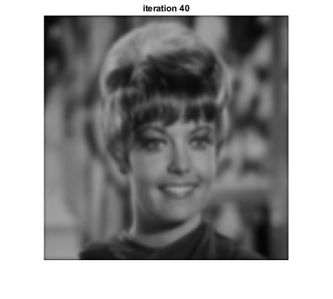 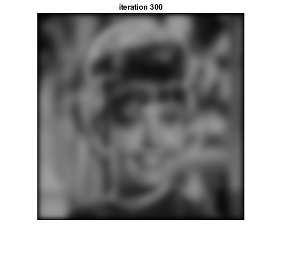 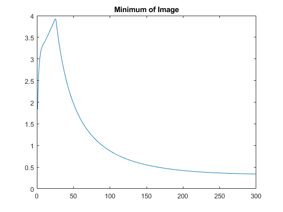 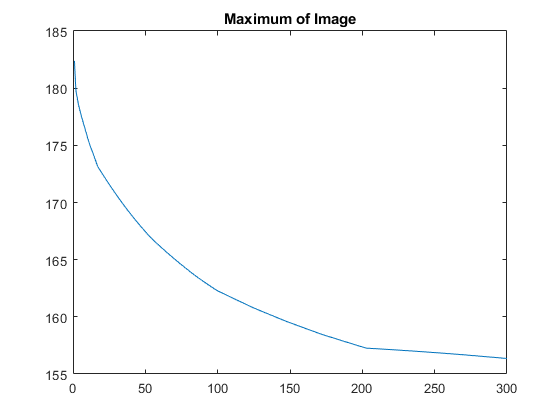 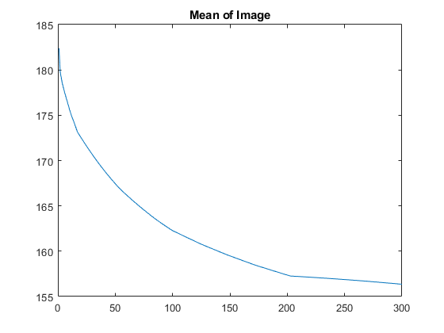 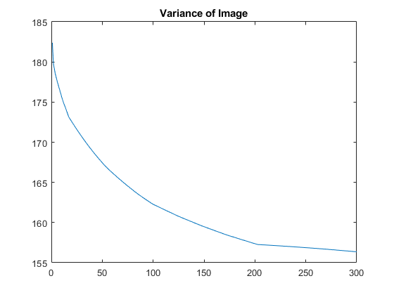
Analysis of Diffusion scale
diffusion_type = 'Charbonnier';
contrast_threshold = 30;
scale_parameter = [0.1 0.2 0.3 0.4 0.5];
diffusion_time = 30;
images = zeros(512,512,5);
metrics = zeros(5, 4);
for s_p = 1 : 5
for iteration = 1 : diffusion_time
image = PM_diffusion(image, contrast_threshold, scale_parameter(s_p), diffusion_type);
end
images(:,:, s_p) = image;
[minu, maxu, meanu, varu] = analyse(image);
metrics(s_p, :) = [minu, maxu, meanu, varu];
end
figure, imshow(uint8(images(:,:,1)))
title(strcat('scale parameter',{' '}, '0.1'))
saveas(gcf, string(strcat('.\scale_effect\','scale parameter',{'_'}, '0.1','.jpg')))
figure, imshow(uint8(images(:,:,2)))
title(strcat('scale parameter',{' '}, '0.2'))
saveas(gcf, string(strcat('.\scale_effect\','scale parameter',{'_'}, '0.2','.jpg')))
figure, imshow(uint8(images(:,:,3)))
title(strcat('scale parameter',{' '}, '0.3'))
saveas(gcf, string(strcat('.\scale_effect\','scale parameter',{'_'}, '0.3','.jpg')))
figure, imshow(uint8(images(:,:,4)))
title(strcat('scale parameter',{' '}, '0.4'))
saveas(gcf, string(strcat('.\scale_effect\','scale parameter',{'_'}, '0.4','.jpg')))
figure, imshow(uint8(images(:,:,5)))
title(strcat('scale parameter',{' '}, '0.5'))
saveas(gcf, string(strcat('.\scale_effect\','scale parameter',{'_'}, '0.5','.jpg')))
figure, plot([0.1 0.2 0.3 0.4 0.5], metrics(:,1));
title('Minumum of Image');
saveas(gcf, string(strcat('.\scale_effect\','plot_minimum','.jpg')))
figure, plot([0.1 0.2 0.3 0.4 0.5], metrics(:,2));
title('Maximum of Image');
saveas(gcf, string(strcat('.\scale_effect\','plot_maximum','.jpg')))
figure, plot([0.1 0.2 0.3 0.4 0.5], metrics(:,3));
title('Mean of Image');
saveas(gcf, string(strcat('.\scale_effect\','plot_mean','.jpg')))
figure, plot([0.1 0.2 0.3 0.4 0.5], metrics(:,4));
title('Variance of Image');
saveas(gcf, string(strcat('.\scale_effect\','plot_variance','.jpg')))
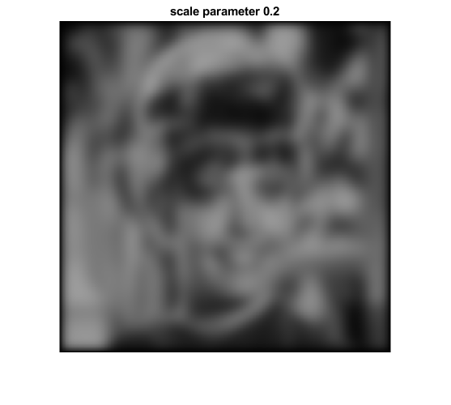 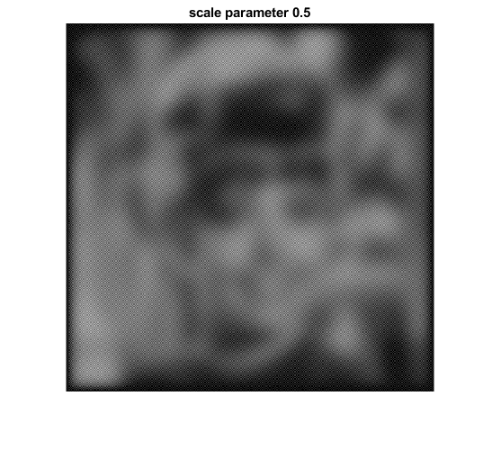 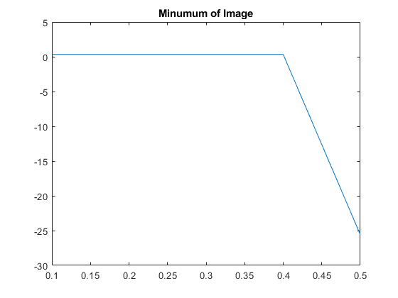 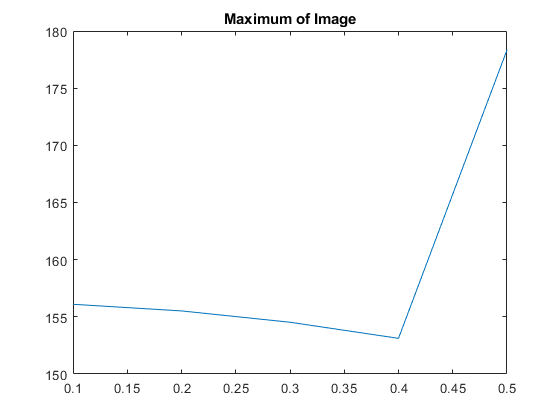 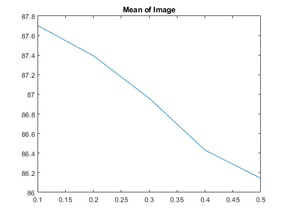 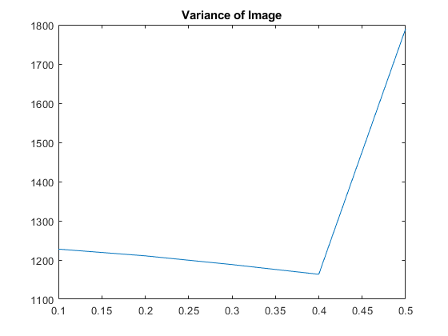
Analysis of Contrast Parameter
diffusion_type = 'Charbonnier';
contrast_threshold = [1 10 20 30 40 50];
scale_parameter = 0.1;
diffusion_time = 30;
images = zeros(512,512,6);
metrics = zeros(6, 4);
for s_p = 1 : 6
for iteration = 1 : diffusion_time
image = PM_diffusion(image, contrast_threshold(s_p), scale_parameter, diffusion_type);
end
images(:,:, s_p) = image;
[minu, maxu, meanu, varu] = analyse(image);
metrics(s_p, :) = [minu, maxu, meanu, varu];
end
figure, imshow(uint8(images(:,:,1)))
title(strcat('contrast parameter',{' '}, '1'))
saveas(gcf, string(strcat('.\contrast_effect\','contrast parameter',{'_'}, '0.1','.jpg')))
figure, imshow(uint8(images(:,:,2)))
title(strcat('contrast parameter',{' '}, '10'))
saveas(gcf, string(strcat('.\contrast_effect\','contrast parameter',{'_'}, '0.2','.jpg')))
figure, imshow(uint8(images(:,:,3)))
title(strcat('contrast parameter',{' '}, '20'))
saveas(gcf, string(strcat('.\contrast_effect\','contrast parameter',{'_'}, '0.3','.jpg')))
figure, imshow(uint8(images(:,:,4)))
title(strcat('contrast parameter',{' '}, '30'))
saveas(gcf, string(strcat('.\contrast_effect\','contrast parameter',{'_'}, '0.4','.jpg')))
figure, imshow(uint8(images(:,:,5)))
title(strcat('contrast parameter',{' '}, '40'))
saveas(gcf, string(strcat('.\contrast_effect\','contrast parameter',{'_'}, '0.5','.jpg')))
figure, imshow(uint8(images(:,:,6)))
title(strcat('contrast parameter',{' '}, '50'))
saveas(gcf, string(strcat('.\contrast_effect\','contrast parameter',{'_'}, '0.5','.jpg')))
figure, plot([1 10 20 30 40 50], metrics(:,1));
title('Minumum of Image');
saveas(gcf, string(strcat('.\contrast_effect\','plot_minimum','.jpg')))
figure, plot([1 10 20 30 40 50], metrics(:,2));
title('Maximum of Image');
saveas(gcf, string(strcat('.\contrast_effect\','plot_maximum','.jpg')))
figure, plot([1 10 20 30 40 50], metrics(:,3));
title('Mean of Image');
saveas(gcf, string(strcat('.\contrast_effect\','plot_mean','.jpg')))
figure, plot([1 10 20 30 40 50], metrics(:,4));
title('Variance of Image');
saveas(gcf, string(strcat('.\contrast_effect\','plot_variance','.jpg')))
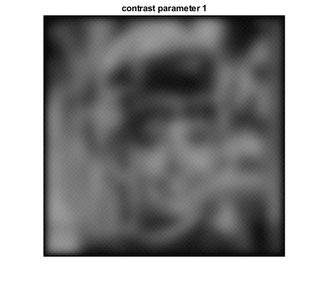 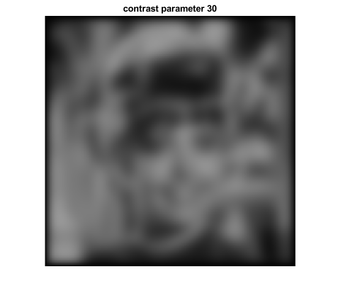 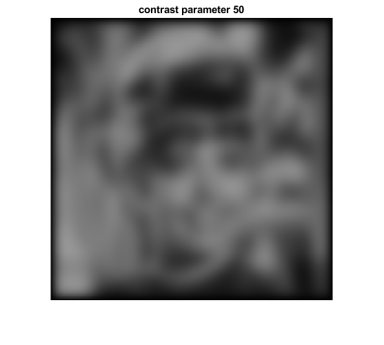 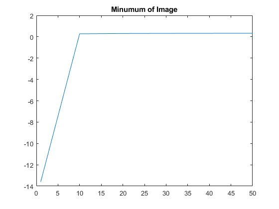 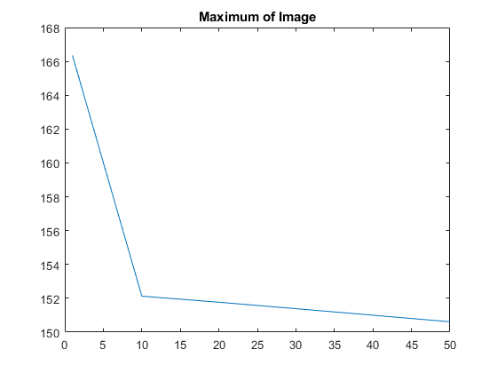 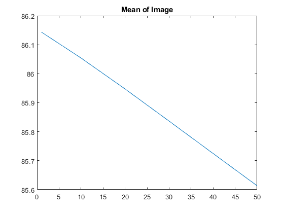 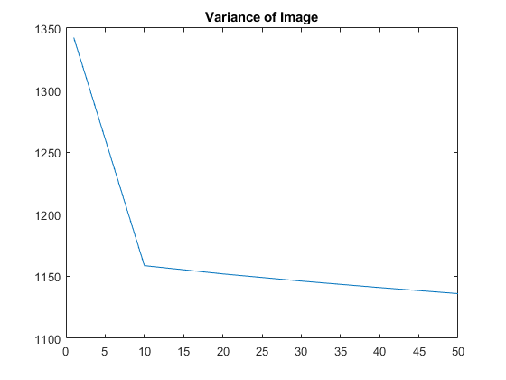
Problem 1.3
filename = '.\foto2.jpg';
image = imread(filename);
org_image = image;
image = double(image);
diffusion_type = 'Charbonnier';
contrast_threshold = 30;
scale_parameter = 1/7;
diffusion_time = 30;
for iteration = 1 : diffusion_time
image = PM_diffusion3D(image, contrast_threshold, scale_parameter, diffusion_type);
end
figure, imshow(uint8(image));
title("Smoothed Image");
figure, imshow(uint8(org_image));
title("Original Image");
function image = PM_diffusion3D(image, lambda, sigma, type)
image(:,:,1) = PM_diffusion(image(:,:,1), lambda, sigma, type);
image(:,:,2) = PM_diffusion(image(:,:,2), lambda, sigma, type);
image(:,:,3) = PM_diffusion(image(:,:,3), lambda, sigma, type);
end
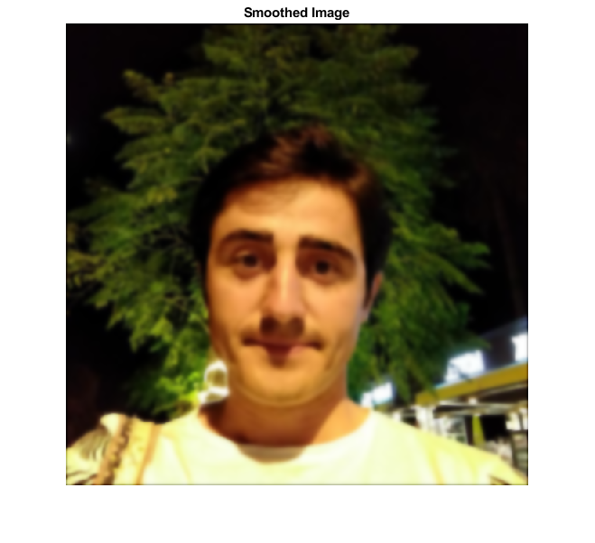 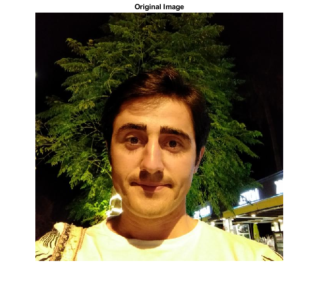